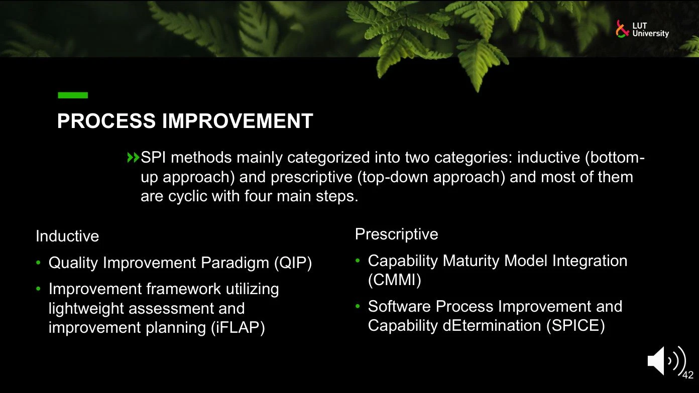
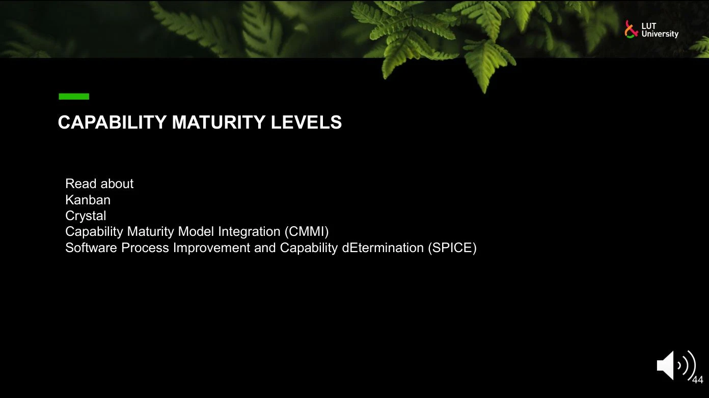
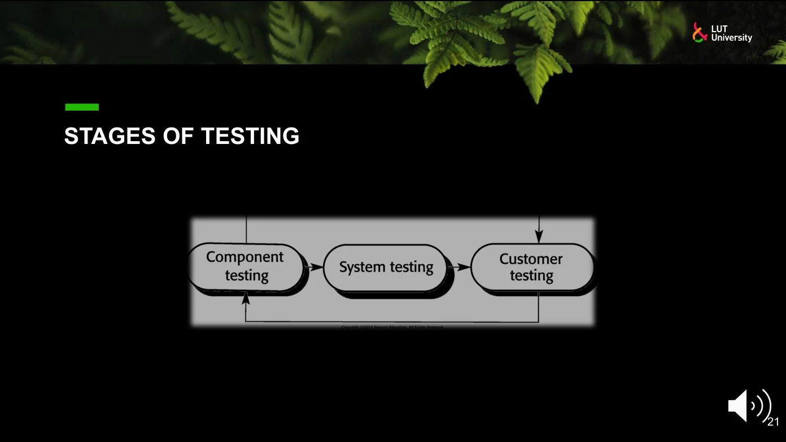
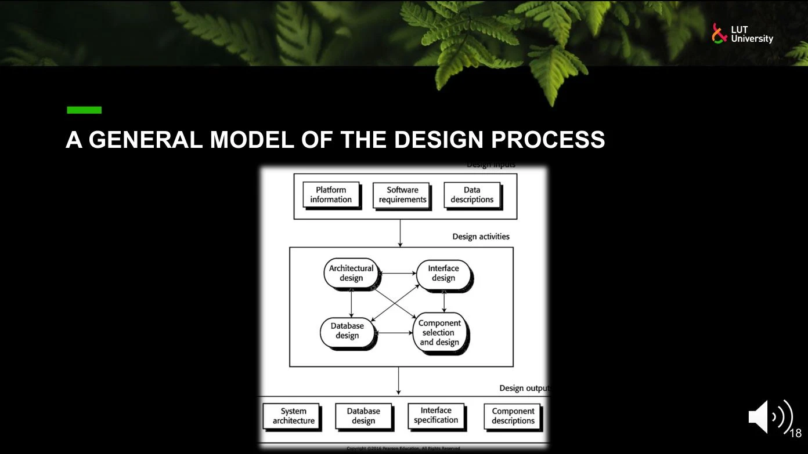
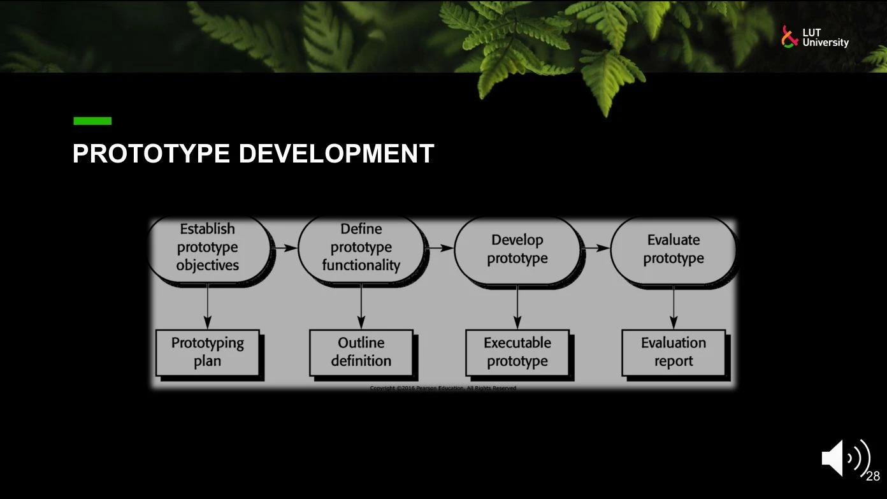
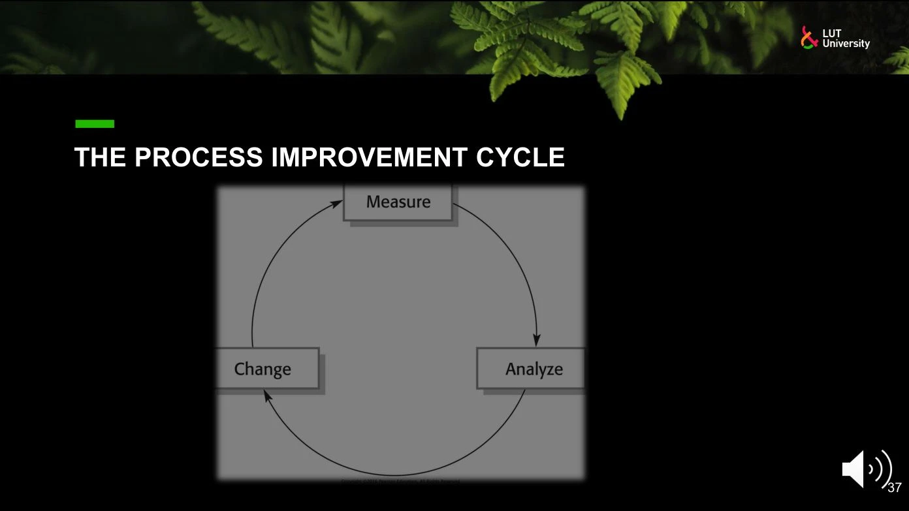

CT60A4050 软件工程基础 · 第 03 / 14 讲
第 3 讲 · 软件过程、过程活动与过程改进
Software Processes, Process Activities and Process Improvement
所属章节：第 1 章 导论与过程模型
资料来源 · 1 项 / 已附 0 项
10_Week 4/1_SE - Lecture 3 - 2026.pdf未附原文件
未附文件仅列原始名称；版本与核对日期由维护者登记。
本节定位
第 2 讲讲了「有哪些模型」，这一讲把镜头拉近到模型内部：一个软件过程由哪些活动组成、活动之间有哪些产物与角色、当变化来临时过程如何应对，最后讨论组织如何系统地改进自己的过程（SPI）。这一讲是「从项目视角看过程」转向「从组织视角看过程」的桥梁。
与前后讲的衔接：第 2 讲的过程模型是本讲的三种基本过程模型的理论来源；本讲的「四项活动」在第 4 至 8 讲逐一展开；本讲末尾的过程改进与度量，直接通向第 10 讲的质量管理与配置管理。
学完本节你应当能够：
- 用「活动 + 顺序 + 产物 + 角色 + 前后条件」完整描述一个软件过程
- 区分计划驱动过程与敏捷过程，并说明现实中为什么大多数过程是混合的
- 比较瀑布、增量开发、集成与配置三种过程模型的适用条件与风险
- 解释变更代价的两个降低手段：变更预期（change anticipation）与变更容忍（change tolerance）
- 说明原型与增量交付各自降低哪一类风险，以及各自的局限
- 为一个组织设计一套可度量的过程改进方案，并选择归纳式或规范式方法
3.1 软件过程是什么
课件定义：“A structured set of activities required to develop a software system.”（开发一个软件系统所需的一组结构化活动。）所有软件过程都包含四项活动：
- 规格 specification：定义系统应该做什么；
- 设计与实现 design and implementation：定义系统的组织方式并实现系统；
- 验证 validation：检查系统是否做了客户想要的事；
- 演化 evolution：根据变化的客户需求修改系统。
而「过程模型」（process model）是过程的抽象表示：它从某个特定视角描述过程。课件原句：“A software process model is an abstract representation of a process. It presents a description of a process from some particular perspective.”同一过程可以画出多个模型，取决于你关心什么（时间？角色？产物？风险？）。
3.2 过程描述里有什么
描述与讨论过程时，我们通常谈活动及其顺序（例如「定义数据模型」「设计用户界面」）。但完整的过程描述还应包含：
| 要素 | 英文 | 说明 |
|---|---|---|
| 产物 | products | 过程活动的产出，如 SRS、设计文档、测试报告 |
| 角色 | roles | 参与者的职责，如产品负责人、架构师、测试工程师 |
| 前置条件 | pre-conditions | 活动开始前必须为真的事实，如「需求已基线化」 |
| 后置条件 | post-conditions | 活动完成后必须为真的事实，如「所有单元测试通过」 |
这四个要素是「过程可执行」的关键：没有产物就无法检查，没有角色就无人负责，没有前后条件就无法判断活动是否真的完成。第 13 讲的课程项目计划书要求写「检查点（checkpoints）与评审内容」，本质就是给阶段补上前置与后置条件。
3.3 计划驱动与敏捷：不是二选一
课件定义：计划驱动过程（plan-driven processes）指所有过程活动都事先计划好，并按计划度量进展；敏捷过程（agile processes）指规划是增量的，过程可较容易地改变以反映变化的客户需求。
紧接着是一句极重要的判断：“In practice, most practical processes include elements of both plan-driven and agile approaches. There are no right or wrong software processes.”（实践中大多数过程同时包含计划驱动与敏捷要素；软件过程没有对错之分。）
3.4 三种基本过程模型
| 模型 | 特征 | 可能是计划驱动或敏捷 |
|---|---|---|
| 瀑布模型 the waterfall model | 计划驱动；规格与开发是分离而独立的阶段 | 计划驱动 |
| 增量开发 incremental development | 规格、开发、验证相互交织 | 两者皆可 |
| 集成与配置 integration and configuration | 系统由既有的可配置构件组装而成 | 两者皆可 |
课件的关键补充：实践中大多数大型系统使用的过程都同时包含这三种模型的要素。例如：总体按瀑布分阶段立项与验收，内部按增量开发交付，部分模块直接集成商用构件。
3.5 增量开发的收益与代价
收益三条：
- 容纳客户需求变化的成本降低——需要重做的分析与文档远少于瀑布；
- 更容易获得客户对已完成工作的反馈——客户可以对着演示评论，看到已经实现了多少；
- 更快速地向客户交付并部署有用软件——客户能比瀑布更早使用并获得价值。
代价两条（高频考点）：
- 过程不可见（the process is not visible）：管理者需要定期可交付物来衡量进展；如果系统开发很快，为每个版本都产出反映其状态的文档并不经济，于是「进展」变得难以从外部观察。
- 系统结构退化（structure tends to degrade）：除非投入时间与金钱做重构，频繁变更会侵蚀软件结构；结构一旦变坏，后续变更越来越难、越来越贵。
第 2 讲的「保持简单 + 持续重构」与这里呼应：增量开发的代价必须用重构来偿还，否则「增量」会变成「技术债复利」。
3.6 集成与配置：以复用为基础
该模型基于软件复用：系统由既有构件或应用系统集成而成，这类现成系统常被称为 COTS（Commercial-off-the-shelf，商用现货）。被复用的元素可以被配置，以适配用户需求的行为与功能。课件指出：复用现在是构建许多类型业务系统的标准做法。
优点：更少的从零开发 → 成本与风险降低；更快的交付与部署。
缺点：需求妥协不可避免，系统可能并不满足用户真实需要；失去对复用元素演化的控制——构件供应商的升级节奏不由你决定。
3.7 四项过程活动的内部结构
课件强调：真实的过程是技术、协作与管理活动的交织序列；四项基本活动在不同过程中被不同地组织——瀑布里排成序列，增量开发里相互交织。
软件规格：确定需要哪些服务，以及系统运行与开发的约束。需求工程过程包括三步：需求获取与分析（干系人要求或期望什么）、需求规格（详细定义需求）、需求验证（检查需求的有效性）。第 4 讲会完整展开。
设计与实现：把系统规格转换为可执行系统的过程。设计是「设计一个能实现规格的软件结构」，实现是「把这个结构翻译成可执行程序」。二者密切相关、可以交织。课件另有一张「设计过程的一般模型」图（原 PDF 为图），其要点是：设计从体系结构设计开始，逐层细化到构件设计与接口设计，并与需求反复核对。
实现有两条路径：开发一个或多个程序；或配置一个应用系统（configuring an application system）。对多数系统而言，设计与实现是交织活动。
软件验证：验证与确认（V&V）旨在表明系统符合其规格并满足客户需求；包括检查与评审过程以及系统测试。系统测试用从规格与真实数据导出的测试用例来执行系统。课件明确指出：测试是最常用的 V&V 活动。
软件演化：软件天生灵活、可以改变；当业务环境变化导致需求变化时，支撑业务的软件必须演化。过去「开发」与「演化/维护」之间有明确分界，但随着全新系统越来越少，这条分界越来越不重要——这也是第 8 讲的主题。
3.8 应对变化：让返工变便宜
变化在所有大型软件项目中都不可避免，来源至少三类：业务变化带来新的或改变的需求；新技术带来改进实现的可能性；平台变化要求应用改动。变化导致返工（rework），因此变化成本包含两部分：返工的成本 + 实现新功能的成本。
降低返工成本有两个思路，必须能区分：
| 手段 | 英文 | 做法 | 典型技术 |
|---|---|---|---|
| 变更预期 | change anticipation | 在过程里安排能「提前发现」可能变化的活动，使重大返工发生前就预见到变化 | 系统原型、原型化需求验证 |
| 变更容忍 | change tolerance | 把过程设计成「变化发生时能以较低成本被容纳」 | 增量交付、可配置架构、自动化回归测试 |
课件给出两个具体技术：系统原型（快速开发系统或其一部分，以检查客户需求与设计决策的可行性，支持变更预期）与增量交付（把增量交付给客户评论与试用，同时支持变更规避与变更容忍）。
3.9 原型：为学习而建
原型定义：“A prototype is an initial version of a system used to demonstrate concepts and try out design options.”（用于演示概念、试验设计选项的系统初始版本。）
原型的收益（课件五条）：改善系统可用性；更贴近用户真实需要；改善设计质量；改善可维护性；减少开发工作量。
要理解「原型」的两种用法（这是课件图示的要点，也是常见考点）：抛弃型原型（throw-away prototype）用于澄清需求后丢弃，不进入产品；演化型原型（evolutionary prototype）逐步演化为最终系统。前者适合验证不确定性，后者要承担「原型代码质量差却上线」的风险。
3.10 增量交付：按优先级分批交付
增量交付不是一次性交付整个系统，而是把开发与交付拆成若干增量，每个增量交付部分功能。用户需求被排优先级，优先级最高的进入早期增量。
关键规则：一旦某个增量的开发开始，该增量的需求就被冻结；但后续增量的需求可以继续演化。这条规则解决了「既要稳定又要灵活」的矛盾：冻结当前、放开未来。
优点：每个增量都交付客户价值，功能更早可用；早期增量充当原型，帮助引出后续增量的需求；整体项目失败的风险更低；优先级最高的服务通常获得最多测试。
问题：多数系统需要一套被各部分共用的基础设施，而识别所有增量都需要的公共设施很难；此外，迭代过程的本质是「规格与软件一起发展」，这与许多组织的采购模型冲突——在这些组织里，完整系统规格是开发合同的一部分。
3.11 过程改进：从「救火」到「改流程」
课件的出发点很现实：无论大型、中型、小型还是初创软件公司，通常在开发与交付中都会遇到问题——缺文档、不遵循流程、缺过程治理、团队间缺集成与协作、缺需求可追溯性、缺技术管理等等。这些问题的后果是项目失败：进度、成本、质量三方面。
SPI（software process improvement）可被视为软件开发项目中的再工程或变更管理过程：识别开发生命周期中的低效环节并加以解决，从而得到更好的过程。课件另一定义：过程改进意味着理解现有过程并改变这些过程，以提高产品质量和／或降低成本与开发时间。
动机（课件列了八条，可归为四组）：
| 动机 | 说明 |
|---|---|
| 标准化与过程一致性 | 建立与组织目标、战略对齐的、标准且实用的开发过程 |
| 成本降低 | 通过改进过程消除问题、冗余与缺陷来改善项目成本 |
| 竞争优势 | 例如通过 CMMI 认证，可凭「基于标准方法的成熟过程」获得更多销售机会 |
| 达成目标、缩短上市时间 | 组织目标、项目交付、质量标准、有价值的产品、专业文档都是 SPI 的产出 |
| 提升客户满意度 | 按时、按规格、高质量交付会提升满意度并改善销售 |
| 工作满意度 | 员工因产出高质量产品、清楚知道自己该做什么而获得满足感，减少因不成熟过程引发的冲突与救火 |
| 自动化与自治 | 引入工具实现自动化、提升质量与一致性，并让不同员工承担不同角色 |
| 已被证明的成效 | 成功实施的 SPI 项目有大量证据支持其价值 |
3.12 过程改进循环与度量
课件给出「过程改进循环」图（原 PDF 为图），其四步可概括为：度量现状 → 分析原因 → 实施改变 → 再度量验证，并循环往复。它与 PDCA 同构，关键在于「以数据开头、以数据收尾」。
过程度量（process measurement）的两条原则：
- 尽可能收集定量的过程数据；但在组织没有清晰定义过程标准时这很难——你不知道该测什么，因此可能必须先定义过程，才可能度量。
- 过程度量应当用于评估改进效果；但这不意味着「度量驱动改进」。改进的驱动因素应是组织目标。
过程度量指标（process metrics）三类：
| 类别 | 含义 | 例子 |
|---|---|---|
| 时间 | 完成过程活动所需时间 | 日历时间；完成某活动或过程的工作量 |
| 资源 | 过程或活动所需资源 | 总工作量（人日） |
| 事件次数 | 特定事件发生次数 | 发现的缺陷数 |
SPI 方法分两大类：归纳式（inductive，自下而上）与规范式（prescriptive，自上而下），多数方法都是循环的、含四个主要步骤。
| 类别 | 代表方法 | 思路 |
|---|---|---|
| 规范式 prescriptive | CMMI（Capability Maturity Model Integration）、SPICE（Software Process Improvement and Capability dEtermination） | 由外部成熟度模型给出「应该达到什么」，组织对照差距逐级提升 |
| 归纳式 inductive | QIP（Quality Improvement Paradigm）、iFLAP（improvement framework utilizing lightweight assessment and improvement planning） | 从团队自身实践出发，轻量评估后制定改进计划 |
课件在「能力成熟度等级」页只放了图，并列出需要自行阅读的主题：Kanban、Crystal、CMMI、SPICE。CMMI 的五个成熟度等级是：初始级（initial）、已管理级（managed）、已定义级（defined）、量化管理级（quantitatively managed）、优化级（optimizing）；SPICE（ISO/IEC 15504）用 0–5 的能力等级描述单个过程的能力。这部分课件要求自学，考试若出现通常只考「五级名称与顺序」或「CMMI 属规范式、QIP 属归纳式」。
最容易走极端的判断是瀑布过时、敏捷唯一正确。课件明确：实践中大多数过程同时含计划驱动与敏捷要素，软件过程没有对错；选择应落到需求稳定性、风险、监管与团队，而非流派站队。另一个被低估的代价是增量开发：它降低变更成本、带来早期反馈，但过程不可见——管理者难从外部衡量进展；结构也易退化，除非投入重构，否则变更越来越贵。完整过程描述不只要活动顺序，还要产物、角色、前置与后置条件，否则活动无法检查、无人负责。
原版图页（源 PDF 插图页）








| English | 中文 | 说明 / 例句 |
|---|---|---|
| software process | 软件过程 | A structured set of activities required to develop a software system. |
| process model | 过程模型 | An abstract representation of a process from some particular perspective. |
| product | 产物 | The outcome of a process activity, e.g. a requirements document. |
| role | 角色 | The responsibilities of the people involved in the process. |
| pre-condition | 前置条件 | A statement that must be true before an activity is enacted. |
| post-condition | 后置条件 | A statement that must be true after an activity is enacted or a product produced. |
| plan-driven process | 计划驱动过程 | All process activities are planned in advance and progress is measured against the plan. |
| incremental development | 增量开发 | Specification, development and validation are interleaved. |
| integration and configuration | 集成与配置 | The system is assembled from existing configurable components. |
| COTS | 商用现货 | Commercial-off-the-shelf system reused and configured rather than built. |
| change anticipation | 变更预期 | Process activities that anticipate possible changes before significant rework. |
| change tolerance | 变更容忍 | The process is designed so changes can be accommodated at low cost. |
| prototype | 原型 | An initial version used to demonstrate concepts and try out design options. |
| incremental delivery | 增量交付 | Delivering part of the functionality in each increment, highest priority first. |
| process improvement | 过程改进 | Understanding existing processes and changing them to raise quality or cut cost and time. |
| process metric | 过程度量 | Quantitative data on time, resources or event occurrences in a process. |
情境：某团队做了三件事：① 在需求阶段用可点击原型与客户确认关键流程；② 把系统拆成可独立部署的六个服务，任一服务可单独升级；③ 建立自动化回归测试，每次提交都跑。请判断各属于变更预期还是变更容忍，并说明理由。
分析：先抓定义。变更预期是「在重大返工前提前发现变化」，手段是让不确定性尽早暴露；变更容忍是「变化发生时以低成本容纳」，手段是结构与流程上的可替换性。
① 属变更预期：原型让客户在看到具体界面后提出真实需求，把「需求理解错误」这类返工提前到编码之前。
② 属变更容忍：服务化把变更的影响范围限制在单个服务内，架构本身容纳变化。
③ 属变更容忍：自动化回归测试让「改一处、坏三处」能被立即发现，从而降低每次变化的代价。
检查：三者是否互相替代？不。预期降低「变化发生的概率与规模」，容忍降低「变化发生后的代价」，二者互补。
情境：某政务系统必须在 4 个月内上线「企业注册」功能，但「税务申报」部分需求尚不明确，客户也无法说清。团队规模 8 人。请给出交付策略并说明理由。
分析：两个部分的不确定性不同：注册功能需求明确、有明确上线日期；申报功能需求不清。这决定了两者应使用不同的不确定性处理手段。
策略：整体采用增量交付：把需求排优先级，把「企业注册」作为第一个增量，冻结其需求并在 4 个月内交付；「税务申报」作为后续增量，需求继续演化。对申报部分先用原型做变更预期——把原型给税务窗口人员试用，暴露「他们说不清但一看就知道不对」的需求。
理由：增量交付解决「何时交付价值」与「范围冻结」的问题；原型解决「需求无法言说」的问题。两者组合正是课件所说的「早期增量本身充当原型，帮助引出后续增量的需求」。
风险与对策：公共设施（登录、权限、审计日志）会被两个增量共用，若在第一个增量里只为注册设计，第二个增量会被迫改造——所以在增量 1 就要识别并实现公共设施，这正是课件指出的增量交付首要问题。
情境：某 60 人软件公司连续三个项目延期，客户投诉缺陷多；公司没有统一的过程文档，各团队各写各的；管理层想「上个 CMMI 三级」。请给出一个务实的过程改进方案。
分析：先诊断，再选方法，再定度量，最后定节奏。
诊断：症状是「延期 + 缺陷多 + 无统一过程」。可能的根因是：无过程基线（不知道正常水平）、无需求可追溯性（变更无法评估影响）、无缺陷度量（无法定位高缺陷模块）。
方法选择：直接冲 CMMI 三级风险高——CMMI 是规范式（自上而下），需要大量过程资产与证据。务实做法是先归纳后规范：先用 iFLAP 之类轻量方法在 1–2 个团队试点（自下而上，成本低、阻力小），把「需求基线 + 变更单 + 缺陷记录」三件事做起来；等有数据、有共识后，再对照 CMMI 二级（已管理级）的要求补齐项目管理制度。
度量设计：按课件三类指标各取一个——时间（需求从提出到基线化的日历时间）、资源（每个需求的人日）、事件（每千行代码缺陷数、变更请求数）。关键原则：度量用于评估改进，改进的驱动是组织目标（按期交付、降低缺陷），不是「把数字做好看」。
节奏：按「度量 → 分析 → 改变 → 再度量」循环，每季度一轮；每轮只改一两个环节，避免一次改太多导致无法归因。
注意：课件提醒「在过程未定义前无法度量」——所以第一步不是收集数据，而是把「需求基线化」这个活动定义清楚（产物、角色、前后条件）。
情境：某公司要做一套医院排班系统，市场上已有成熟的排班引擎可授权使用（COTS）。但医院要求「按科室自定义排班规则，且规则需支持护士工会的复杂条款」。请分析复用该引擎的利弊，并给出建议。
分析：用课件的两条缺点逐一检验。
需求妥协：COTS 引擎的规则模型是固定的，工会条款这类高度定制的规则很可能无法表达，或只能通过外部脚本绕行。妥协的代价是「系统不完全满足真实需要」，而这恰恰是排班系统的核心价值。
演化失控：工会条款会随劳资协议变化，而引擎升级节奏由供应商决定；若供应商停止支持或修改规则模型，医院将被迫跟随。
收益：排班算法的核心（约束求解、冲突检测）极其复杂，自研成本与风险高；复用可显著缩短上市时间。
建议：分层决策——核心求解引擎复用，规则表达层自研（把工会条款翻译成引擎可执行的约束）；合同中约定源码托管（escrow）与规则模型的扩展接口，以缓解演化失控。这是「部分复用 + 关键差异化自研」的典型折中。
- 写出软件过程的四项基本活动，并说明「过程模型」与「软件过程」的区别。
- 增量开发的两大问题是什么？分别给出一种缓解手段。
- 判断：集成与配置模型中，需求妥协是可以完全避免的。（对/错，说明理由）
- 某团队在每个增量开始后仍允许修改该增量的需求，结果每个增量都延期。请指出违反了哪条规则，并说明正确做法。
- 设计三个过程度量指标，分别对应时间、资源、事件三类，并说明它们能回答什么管理问题。
- CMMI 与 QIP 分别属于规范式还是归纳式？各自的优缺点是什么？
参考答案与思路
1. 规格、设计与实现、验证、演化。软件过程是现实中的一组活动；过程模型是对它的抽象表示，从一个特定视角描述它，因此同一过程可以有多个模型。
2. ①过程不可见——缓解：设定轻量的固定交付节奏（如每两周演示 + 一页进展说明），用可运行的增量代替厚文档作为进展证据；②结构退化——缓解：持续重构、把重构排进每个增量、用自动化测试保护重构。
3. 错。课件明确「requirements compromises are inevitable」：复用构件的功能边界决定了系统能做什么，需求必须向构件让步。
4. 违反了「增量开始后需求冻结，只有后续增量的需求可继续演化」。正确做法：把新需求排入后续增量的待办列表；若必须插入当前增量，则等量移除其他内容（范围不变），否则日期必然滑动。
5. 时间：需求从提出到基线化的中位天数——回答「我们的规格活动是否成为瓶颈」；资源：每个需求从设计到验收的人日——回答「单位功能的成本是否在改善」；事件：每千行代码的缺陷数——回答「质量是否在提升、哪个模块最危险」。
6. CMMI 属规范式（外部模型给出目标等级，组织对照差距改进）；QIP 属归纳式（从团队自身数据与经验出发）。规范式优点是标准、可比、利于投标；缺点是文档负担重、易形式主义。归纳式优点是贴合实际、阻力小；缺点是难以横向比较、易停留在局部优化。
描述与改进一个过程的清单
- 写出过程包含的活动，并标注顺序与并行关系
- 为每个活动定义产物（可检查的交付物）
- 为每个活动指定角色（谁负责、谁批准）
- 写出前置条件与后置条件（怎样才算开始、怎样才算完成）
- 标注哪些活动用于「变更预期」、哪些用于「变更容忍」
- 选出三类度量各一个（时间、资源、事件），并写明采集方式
- 按「度量 → 分析 → 改变 → 再度量」设定改进循环与复盘节奏
- 评估是否需要规范式模型（CMMI/SPICE）；若需要，先补齐二级（已管理级）的项目管理证据
| 源文件 | 页码 | 覆盖知识点 |
|---|---|---|
| 10_Week 4/1_SE - Lecture 3 - 2026.pdf | p4–p7 | 软件过程定义、四项活动、过程模型、过程描述要素（产物/角色/前后条件）、计划驱动与敏捷 |
| 10_Week 4/1_SE - Lecture 3 - 2026.pdf | p8–p13 | 增量开发、收益与问题、集成与配置、COTS、复用优缺点 |
| 10_Week 4/1_SE - Lecture 3 - 2026.pdf | p14–p23 | 四项活动的内部结构：需求工程过程、设计与实现、验证与确认、演化 |
| 10_Week 4/1_SE - Lecture 3 - 2026.pdf | p24–p31 | 应对变化、返工成本、变更预期与变更容忍、原型、增量交付及其优缺点 |
| 10_Week 4/1_SE - Lecture 3 - 2026.pdf | p32–p43 | 过程改进的动因、SPI 定义、改进循环、度量与指标、归纳式与规范式方法、CMMI/SPICE |
| 10_Week 4/1_SE - Lecture 3 - 2026.pdf | p44 | 自学任务：Kanban、Crystal、CMMI、SPICE |
| （跳过） | — | 本周无纯图片或行政页需跳过 |
| （补充） | — | CMMI 五级名称与 SPICE 能力等级按标准定义补足；课件仅给图并要求自学 |